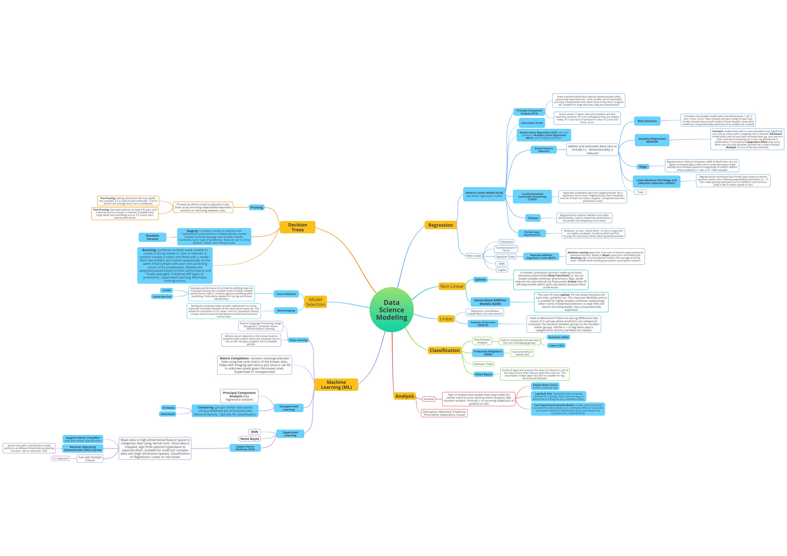

Data Modeling Mind Map
September 20, 2023
Hey team!
I hope everyone is enjoying their day. I just finished reading through this book, "An Introduction to Statistical Learning,"
and felt it helpful to compose a mind map! There were so many vocabulary terms, definitions, categories and the like so this helped me process all the information discussed.
Perhaps it's the school teacher in me, but I love a good summative assessment. Mind maps are particularly useful in gaining a bird's-eye view on many concepts and the connections among them.
With the help of authors James, Witten, Hastie, and Tibshirani, along with a healthy heaping of Google search engine requests, I created this map of data science modeling techinques.
These techniques are commonly used to maximize information gain from minimal data.
I am SURE there is room for improvement in this map - many connections, definitions, terms, and categories that could be included and/or revised - so I will be revisiting this map often
as I continue to learn. If you notice a revision opportunity, please let me know via email! I appreciate any and all advise you are willing to give. I hope you can gain something (positive) from studying my map! Thanks!